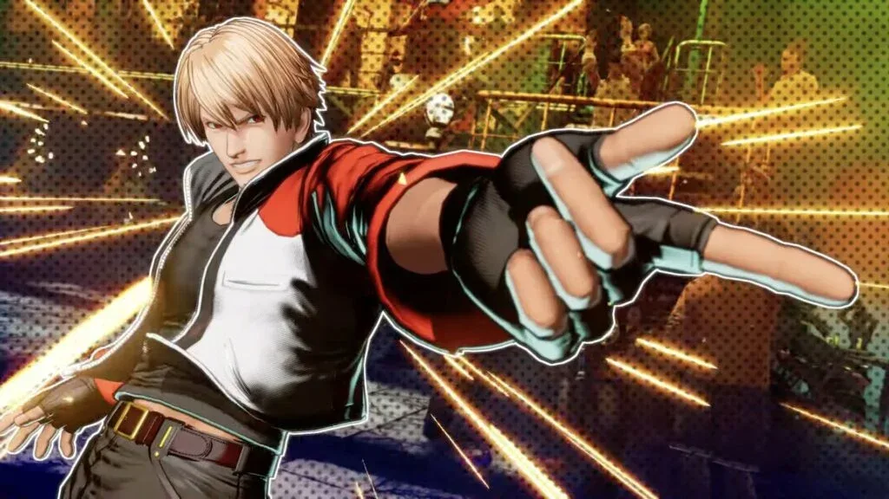
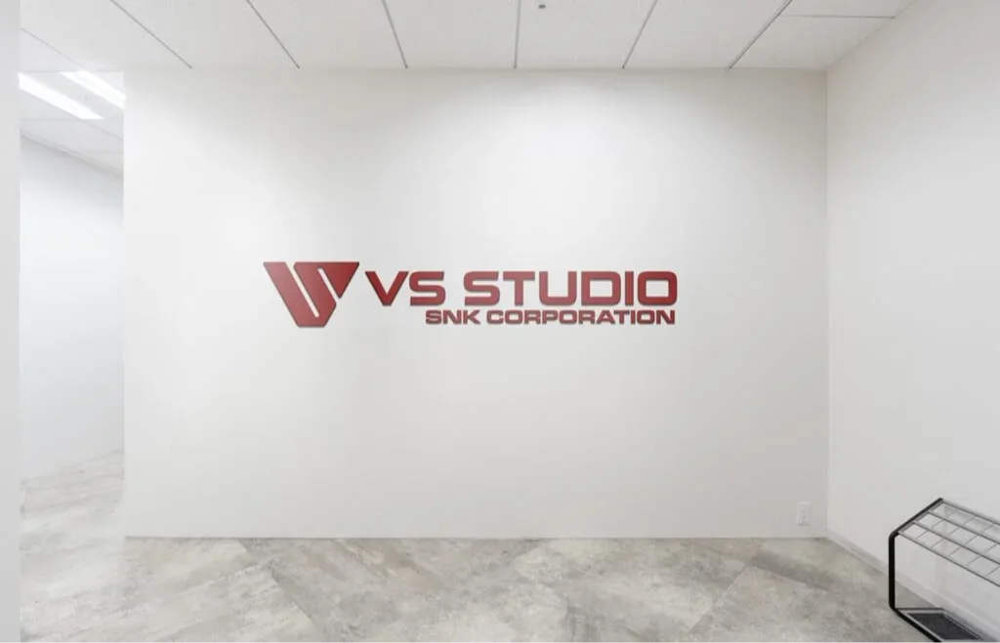
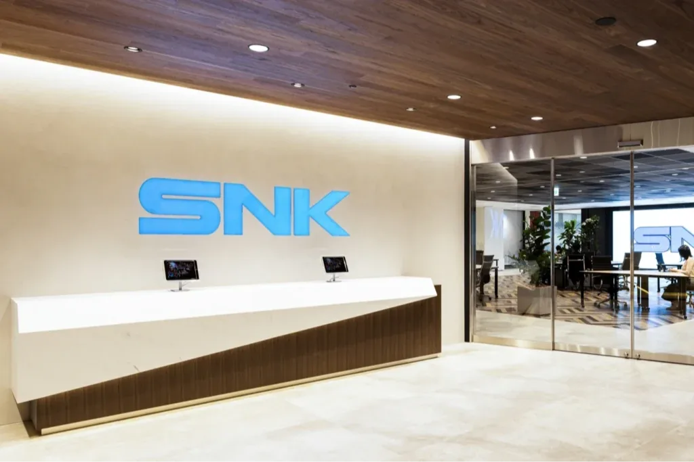

Luiso · 15 de septiembre de 2026
Katsuhiro Harada, una de las figuras más reconocidas de la industria japonesa, ya tiene claro qué quiere conseguir con VS Studio, el nuevo equipo que fundó junto a SNK: recuperar parte de la creatividad y la identidad que caracterizaron a la época dorada de los videojuegos japoneses.
El estudio fue creado a comienzos de este año con el respaldo de SNK, compañía que actualmente pertenece al grupo saudí Savvy Games Group. Varios antiguos colaboradores de Harada en Bandai Namco también se incorporaron voluntariamente al nuevo equipo, aunque el estudio no se limitará exclusivamente a veteranos de Tekken.
Durante una entrevista con VGC, Harada y Ozan Kocoglu, director de publicaciones de SNK, explicaron cuáles son sus objetivos para esta nueva etapa. Para Kocoglu, el crecimiento de SNK requiere incorporar nuevas ideas y dejar atrás una dependencia excesiva de su legado, mientras que la experiencia de Harada puede ayudar a llevar a la compañía hacia una nueva etapa.
“SNK está en una fase de crecimiento agresivo”, explicó Kocoglu, quien considera que la compañía necesita ampliar su catálogo con nuevas experiencias que puedan convivir con sus franquicias tradicionales.
Uno de los aspectos que más interesan a Harada es precisamente la relación entre los desarrolladores y quienes toman las decisiones dentro de una compañía.
El veterano desarrollador sostiene que muchas empresas japonesas históricamente terminaron diversificando sus negocios hacia áreas como parques de atracciones u otras actividades, lo que provocó que parte de sus directivos perdiera contacto con el desarrollo de videojuegos.
Según Harada, SNK representa una excepción porque sus responsables conocen y juegan los títulos que desarrolla la compañía, incluso durante las etapas de prototipo.
Para él, esta conexión entre dirección y desarrollo es fundamental para construir buenos videojuegos. De hecho, considera que esta característica podría ayudar a SNK y VS Studio a recuperar parte de la época dorada de los videojuegos japoneses.
Harada también explicó que VS Studio tendrá un alto grado de libertad creativa, aunque eso no significa que puedan desarrollar cualquier cosa sin tener en cuenta las expectativas de los jugadores.
El estudio ya trabaja en un proyecto que todavía no fue anunciado. Harada evitó revelar detalles, pero dejó claro que no será algo completamente alejado de aquello por lo que sus seguidores conocen al desarrollador.

El objetivo de la colaboración no se limita a crear una nueva franquicia. Kocoglu aseguró que VS Studio podría trabajar tanto en nuevas propiedades intelectuales como en las franquicias existentes de SNK.
Esto abre la puerta a que la experiencia de Harada pueda aplicarse a sagas como Fatal Fury, The King of Fighters u otras propiedades de la compañía.
Además, SNK no parece tener intención de detener su expansión después de la creación de VS Studio. Kocoglu aseguró que la empresa seguirá buscando talento y nuevos estudios relacionados con juegos de acción que puedan incorporarse a su estructura.

La estrategia llega en un momento particular para el mercado AAA, especialmente en Occidente, donde numerosos estudios han cerrado y varias compañías redujeron sus inversiones. Para Kocoglu, esta situación representa una oportunidad, aunque también reconoce que desarrollar grandes juegos continúa siendo extremadamente caro.
Su respuesta a este desafío es volver a conceptos básicos: calidad, innovación y originalidad.
El ejecutivo también habló sobre las lecciones que SNK obtuvo con Fatal Fury: City of the Wolves. Según Kocoglu, el juego demostró que las expectativas de los jugadores respecto al contenido disponible desde el lanzamiento son cada vez más altas.
Considera que el lanzamiento inicial del juego quizá no ofreció el nivel de contenido que los jugadores esperaban y que la compañía necesitó tiempo para corregir y ampliar la experiencia.
A partir de esto, SNK pretende mejorar no solamente sus juegos, sino también la comunicación con la comunidad antes, durante y después del lanzamiento. La compañía considera que sus títulos actuales tienen una vida mucho más extensa que los juegos tradicionales, especialmente debido a actualizaciones, contenido descargable y nuevos personajes.
Aunque varios antiguos miembros del equipo de Tekken se unieron a VS Studio, Harada todavía no confirmó que su primer proyecto vaya a ser un juego de lucha.
El desarrollador sí dejó una pista importante: no quiere decepcionar las expectativas de sus seguidores y aseguró que el proyecto será una sorpresa, pero no algo completamente alejado de lo que el público espera de él.
Respecto a Tekken, Harada aclaró incluso que lleva 31 años trabajando en la saga y que actualmente no conoce los planes que Bandai Namco tiene para el futuro de la franquicia.
Aun así, aseguró que los desarrolladores que permanecen en el equipo han crecido profesionalmente y que espera el futuro de Tekken como un fan más.
Para Harada, el verdadero objetivo de VS Studio será demostrar que este modelo puede funcionar a largo plazo. Y su definición de éxito resulta bastante sencilla: que el estudio siga existiendo dentro de cinco años y haya conseguido construir algo capaz de marcar una diferencia en la industria.